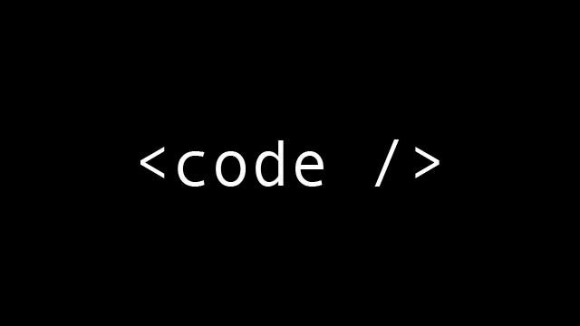
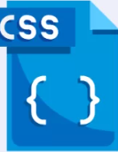
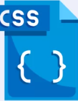
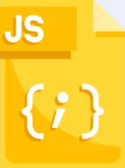

Mon profil_
Après un bac scientifique (option culture numérique) et un DUT Génie Thermique et énergie,
je souhaite aujourd'hui me réorienter vers le domaine de l'informatique pour lequel j'ai toujours eu ungrand intérêt.
Pour engager mon nouveau projet professionnel, j'ai suivi la formation Prépa Avenir pendant 3 mois de mai à septembre 2021 à La Roche sur Yon.
Durant les ateliers proposés, j'ai été attiré par le métier de développeur web en réalisant des enquêtes métiers.
Très intéressé par les missions autour du numérique, j'ai décidé d'orienter mon avenir professionnel dans cette voie en optant pour un stage afin d'acquérir une expérience professionnelle.
Ce stage me permettrait également de découvrir quels sont les missions d'un developpeur web en entreprise.
A titre personnel, je suis passionné par la programmation et j'ai pu concevoir des petits programmes de jeux sous excel (VBA) pendant mon temps libre.
Sérieux, méthodique et rigoureux, je suis motivé et je compte m'investir pleinement pour réussir.
kilian.sochard.pro5@gmail.com
06 75 90 69 55
48000 Mende
Mes competences de developpeur_
Algoritme
- Instruction en pseudo-code
- boucle conditionnelles
- boucle itératives
- tableaux
- procédures et fonctions
Html et css
 

- balise html
- Navigation
- feuilles de style css
- formulaires
- responsive desingn
- Framework Bootstrap
- Maquetage et design
JavaScript
- afficher dans le dom avec javascript
- récupérer des données du dom et savoir les analyser.
- manipulation des formulaires
- Contrôle de la saisie utilisateur
Projects_
Project memory
faire un jeu de memory où le but est de trouver toutes les paires
Découvrir le projetProject convertisseur
Programme qui converti une somme d'euros en franc ou inversement
Découvrir le projetMes experiences
professionnelles_
Stage de découverte de conseiller informatique
- Juin 2023 Pôle numérique Gourdon
- Accueille des clients, les conseiller, répondre à leur interrogation concernant des problèmes liés à l'informatique.
Stage informatique
- Juin 2023 Mission Locale Cahors
- Étude statistique sur les jeunes en contrat engagement jeune. Utilisation de python et power bi pour la visualisation.
Agent de Propreté
- De septembre 2021 à mai 2022 OPS
- La roche sur Yon Ménage dans des chambres d'hôtel (Literie, nettoyage salle de bain...)
Agent de collectivité (saisonier)
- De juillet 2018 à août 2021
- Comité d'entreprise Sncf Centres de vacances pour enfants (Samoëns, Argentière, Belle-lle, Nevers). Service, ménage, blanchisserie et aide cuisine.
Mes Centres
d'interets_
Jeux de logique
- Jeu d'échec à titre personnel
Sport
- Badminton
- course d'orientation
- Roller en club pendant plusieurs années
Lecture
- Développement personnel
Nature
- Randonnée